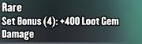

Специальные усилители которые могут быть установлены в пояса.
Медали классифицируюся по определённым уровням мощности и степенью редкости, чем уровень выше тем сильнее медаль.Всего у медалей 5 степеней мощности , а так же имеется свой уровень. На данной картинке изображена медаль 1 уровня что видно сверху в правом углу, можностью 5 что видно из верхнего левого угла и степенью редкости epic, что видно из фиолетового свечения в обводке медали
На данной картинке изображена медаль 1 уровня что видно сверху в правом углу, можностью 5 что видно из верхнего левого угла и степенью редкости epic, что видно из фиолетового свечения в обводке медали
максимальный уровень медалей-15. С увеличением уровня открываются новые дополнительные бонусы.Здесь изображена медаль 1 уровня, как видно дополнительные бонусы медали не известны
Здесь изображена медаль уже 12 уровня. на ней известны все дополнительные бонусы.
Редкость определяет какие бонусы известны игроку с самого начала. Редкость бывает обычной, не обычной,редкий, эпической и легендарной. По цветам классификация выглядит следующим образом: белый, зелёный, синий,фиолетовый и жёлтый
Белая и зелёная не показывают какие бонусы будут появляться у медали в зависимости от её прокачки.Зелёный- показывает один бонус. Синий-показывает два бонуса. Фиолетовый-три бонуса.Жёлтый-четыре бонуса.
Медали могут быть установлены в следующие слоты
каждый из этих слотов имеет определённый тип бонуса.
| Изображение | Пример бонуса | Описание |
|---|---|---|
| Даёт защиту от приёмов противника. Может быть как в процентах так и в единицах. | ||
| Даёт защиту от гемов противника. Может быть как в процентах так и в единицах. | ||
| Даёт дополнительный урон от приёмов. Может быть как в процентах так и в единицах. | ||
| Даёт дополнительный урон от гемов. Может быть как в процентах так и в единицах. |
Так же есть различные комбинации медалей дающие дополнительные бонусы. Комбинации могут быть от двух до четырёх медалей одного типа. Типы дополнительных бонусов описываются сверху медали. Так же там подписывается и количество медалей требуемых для полуения этого бонуса.
Данный бонус можно получить комбинацией двух медалей, а вот этот
комбинацией из четёрых медалей. Это видно из скобочек возле надписи set bonuce. В первом случае там нарисована цифра 2 а во втором 4.
Активированные дополнительные бонусы отображаются в меню пояса синим цветом, а бонусы самого пояса зелёным.
.| Название бонуса | Отображение бонуса | Требукемое количество медалей для активации | Описание |
|---|---|---|---|
| armor | 2 медали | снижает урон наносимый гемами противника на 20 процентов. | |
| takedown | 2 медали | увеличивает урон наносимый приёмами на 15 процентов.Так же существует усиленная версия этой медали дающая 40 процентов. | |
| vitality | 2 медали | увеличивает здоровье на 20 процентов. | fury | 2 медали | увеличивает урон гемов на 15 процентов.Так же существует усиленная версия этой медали дающая 40 процентов. |